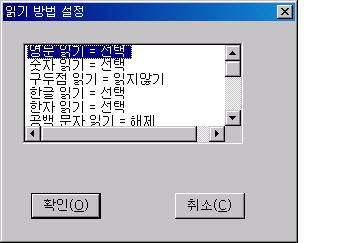
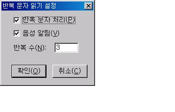

독서를 할 때 영문 읽기, 한자 읽기, 숫자 읽기, 특수문자 읽기 등의 설정을 합니다.
읽기 방법 설정 기능을 실행하면 읽기 방법 설정
대화상자가 나타나고 이 곳에 사용자의 선택이 가능한 항목들이 목록에 표시됩니다. 변경하기 원하는 항목을 선택한 후 <Space>키를 사용하여 선택 상태를 변경합니다.
선택사항을 조절한 후 '확인' 버튼을 누르면 설정됩니다.

다음 기능에 한해서는 편집 모드가 아닌 상황에서 대화상자를 통하지 않고서도 다음 키들를 사용해 각
요소의 읽기 방법을 선택할 수 있습니다.
1. 구두점 읽기 선택: 'B'
2. 특수문자 토글: 콤마(,)
3. 한자 토글: 슬레시(/)
4. 억양 사용: 점(.)
반복 문자란 연속적으로 나타나는 문자를 말합니다. 예를 들어 데시(-) 기호가 '-----'와 같이 연속으로 있을 경우 이는 반복문자입니다. 파일 내의 문자들 중 이렇게 반복적으로 나타나는 문자를 읽어주는 방법을 사용자가 설정해 줄 수 있습니다.
[설정] 메뉴의 [반복 문자 설정] 메뉴를 사용하면 '반복 문자 설정' 대화상자가 나타나고 이 곳에서 반복 문자에 대한 설정을 한 후 '확인' 버튼을 눌러 설정합니다.
설정 내용은 다음과 같습니다.

1. 반복 문자 처리 체크상자: 반복 문자를 사용할지 여부를 선택합니다. 해제하면 반복적으로 나타나는 문자의 경우에도 있는 그대로 읽어줍니다.
2. 음성 알림 체크상자: 선택 돼 있으면 반복 문자의 경우 문자를 있는 그대로 읽지 않고 반복된 수를 알려줍니다.
해제돼 있으면 반복 문자의 경우 아무런 소리가 나지 않습니다.
3. 반복수 편집창: 반복 문자로 인식할 문자의 개수를 입력합니다. 만일 3이라면 3개 이하의 문자는 반복 문자로 처리하지 않습니다.
독서시 출력되는 음성의 속도, 크기, 높이 등을 사용자에 알맞게 설정합니다.
설정을 위해서는 [설정] 메뉴의 [음성 출력 설정] 메뉴를 사용합니다.
'음성 출력 설정' 대화상자에는 속도, 높이, 크기를 조절하는 스크롤바가 있습니다. 원하는 스크롤바에서 화살표를 사용해 값을 변경한 후 '확인' 버튼을 눌러 설정값을 적용시킵니다.
만일, 재생 중인 상태라면 다음 키들을 사용해 음성 출력을 설정할 수도 있습니다.
| 종류 | 감소 | 증가 |
|---|---|---|
| 속도 | Shift-왼쪽 화살표 | Shift-오른쪽 화살표 |
| 높이 | Alt-아래 화살표 | Alt-위화살표 |
| 크기 | Shift-아래 화살표 | Shift-위 화살표 |
* 미디어 파일의 재생 속도 변경과 볼륨 등의 조절에는 위의 기능이 적용되지 않습니다.
독서창의 음성 종류를 선택합니다.
출력되는 음성의 종류를 변경하려면 [설정] 메뉴의 [음성 엔진 변경] 메뉴를 사용합니다.
'엔진 변경' 대화상자가 나타나면 목록에서 원하는 엔진 종류를 선택하고 '확인' 버튼을 눌러 음성 엔진을 변경합니다.
여기서 사용할 수 있는 음성 종류는 센스리더와 같습니다.
언어별 보조 음성 엔진의 선택과 자동모드 사용 엔진의 설정 그리고 보조 음성 엔진의 속도, 높이, 크기 등을 지정합니다.
보조 음성 엔진은 외국어를 보다 정확하게 듣기 위해 사용되는 음성엔진으로 센스리더 설치 이후 별도의 언어팩을 설치하여 사용하거나 컴퓨터에 설치되어 있는 Microsoft Speech 4.x와 5.x 규격의 음성엔진을 이용하게 됩니다.(윈도우즈 XP의 경우 'Microsoft Sam' 엔진이 내장되어 있습니다.)
'보조 음성 엔진 선택' 대화상자의 구성은 다음과 같습니다.
1. 언어 선택 목록상자
현재 컴퓨터에서 사용할 수 있는 언어 종류가 목록으로 표시됩니다. 특정 언어를 자동 모드에서 사용하려면 해당 언어에 위치한 이후 <Space> 키를 눌러 자동 모드로 선택해 주어야 합니다.
2. 음성엔진 선택 목록상자
언어 선택 목록상자에서 언어를 선택한 이후 음성 엔진 목록으로 이동하면 현재 컴퓨터에서 사용할 수 있는 음성엔진이 목록으로 표시됩니다. 사용을 원하는 음성 엔진을 방향키를 사용하여 선택합니다.
3. 속도, 높이, 크기 설정 스크롤바
음성엔진을 선택한 다음 <Tab> 키를 누르면 속도, 높이, 크기 등을 설정할 수 있는 스크롤바로 이동합니다. 방향키를 사용하여 사용자가 원하는 값으로 설정합니다.
* 보조 음성엔진 선택에서 지정한 음성은 '보조 음성 엔진 사용 토글' 기능을 사용해 자동 모드나 수동 모드로 선택한 경우 동작하게 됩니다.
* 독서기에서의'보조 음성 엔진 사용 토글' 기능의 단축키는 <Ctrl-E> 키입니다.
억양을 사용하면 내용을 읽을 때 점가 찍힌 문장은 내려 읽고 물음표가 찍힌 문장은 올려 읽어 독서시 억양을 사용하지 않는 경우보다 좀 더 실감나는 독서를 할 수 있습니다.
억양은 재생시에만 적용되며 대부분의 구두점은 무시됩니다.
억양 사용의 선택은 [설정] 메뉴의 [억양 넣음] 메뉴를 사용하며, 한 번 실행시마다 사용과 해제가 토글됩니다.
편집 모드가 아닌 상태에서는 <점(.)>키를 사용해 억양 기능의 사용 여부를 토글할 수도
있습니다.